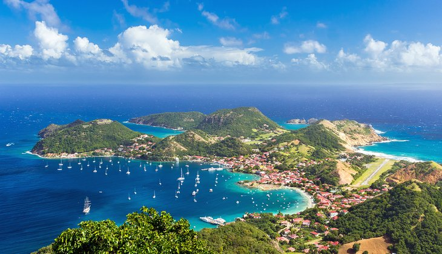

An Unforgettable Journey
Day 1: Arrival in Paradise
Day 2: Exploring Basse-Terre
Day 3: Discovering Local Culture
Day 4: Sailing to Îles des Saintes
Day 5: A Farewell to Remember
Photo Gallery

Video
Local Music
It all started one rainy afternoon when I was wandering around the city, trying to escape the monotony of my routine. I had no particular destination in mind, just a need for something new. As I walked through a quiet street, I noticed the sound of live music drifting from a small, cozy café tucked in the corner. The soft melody intrigued me, so I stepped inside to find a local musician playing acoustic guitar. The atmosphere was warm, with a gentle crowd listening intently. I grabbed a seat and soon found myself lost in the rhythms and lyrics of songs I had never heard before. The music felt different from the mainstream stuff I was used to – raw, real, and full of emotion.
Curious, I started chatting with the barista about the musician. She told me that he was part of a local scene, where artists regularly performed in small venues like this, sharing their work with anyone who would listen. She also mentioned that there were music events happening all over the city, but they were often overlooked by tourists.
Intrigued by this hidden world of local talent, I began exploring more. I started attending open mics, listening to street performers, and visiting cafes where live music was the heartbeat of the place. Slowly, I learned about local bands, genres, and sounds that were unique to the area. I realized that music wasn’t just something you heard on the radio—it was a living, breathing part of the community. That rainy afternoon marked the beginning of my love for local music, and now, it’s something I cherish and seek out wherever I go.
Trip Information
| Date | Location | Activity |
|---|---|---|
| Day 1 | La Caravelle Beach | Sunset walk and relaxation |
| Day 2 | La Soufrière & Carbet Falls | Hiking & waterfall visit |
| Day 3 | Pointe-à-Pitre | Exploring markets & Gwo Ka music |
| Day 4 | Îles des Saintes | Snorkeling & seafood tasting |
| Day 5 | Grand Anse Beach | Beach relaxation & farewell |
Island Map
- La Caravelle Beach
- La Soufrière
- Carbet Falls
- Pointe-à-Pitre
- Îles des Saintes
- Grand Anse Beach